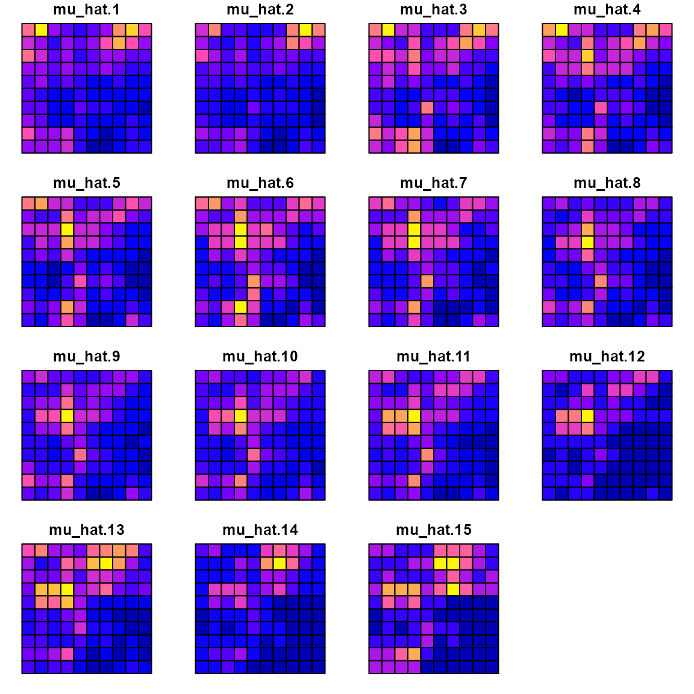
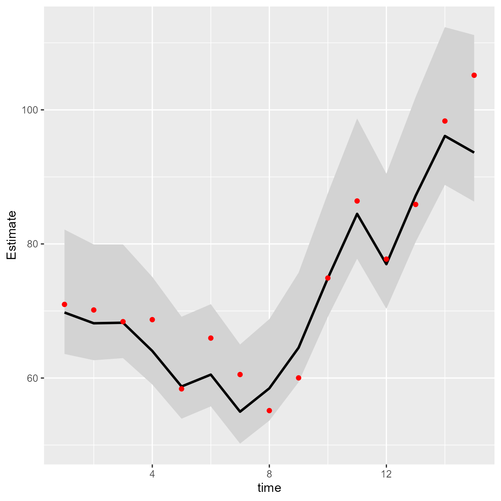
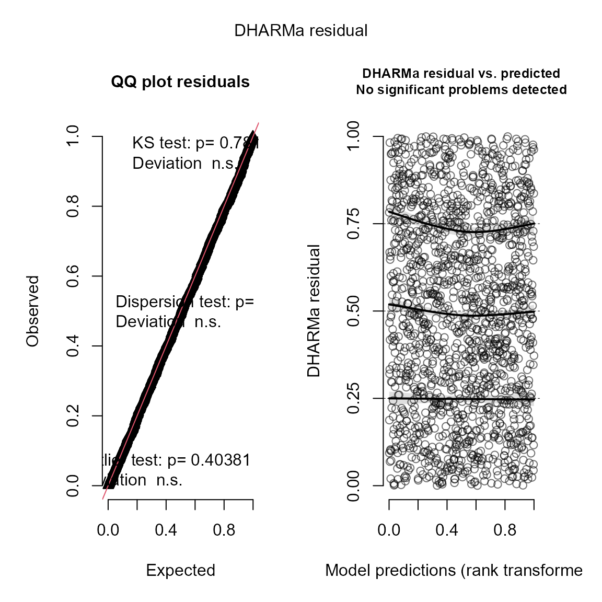
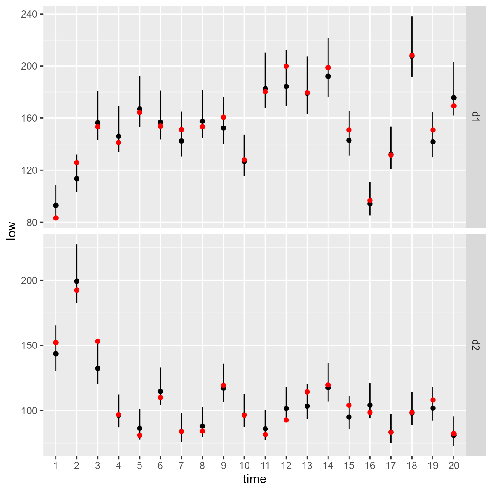

Vector autoregressive spatio-temporal models
James T. Thorson
Source:vignettes/web_only/VAST.Rmd
VAST.RmdtinyVAST is an R package for fitting vector
autoregressive spatio-temporal (VAST) models. We here explore the
capacity to specify the vector-autoregressive spatio-temporal
component.
Spatio-temporal autoregressive model
We first explore the ability to specify a first-order autoregressive spatio-temporal process:
# Simulate settings
theta_xy = 0.4
n_x = n_y = 10
n_t = 15
rho = 0.8
spacetime_sd = 0.5
space_sd = 0.5
gamma = 0
# Simulate GMRFs
R_s = exp(-theta_xy * abs(outer(1:n_x, 1:n_y, FUN="-")) )
R_ss = kronecker(R_s, R_s)
Vspacetime_ss = spacetime_sd^2 * R_ss
Vspace_ss = space_sd^2 * R_ss
# make spacetime AR1 over time
eps_ts = mvtnorm::rmvnorm( n_t, sigma=Vspacetime_ss )
for( t in seq_len(n_t) ){
if(t>1) eps_ts[t,] = rho*eps_ts[t-1,] + eps_ts[t,]/(1 + rho^2)
}
# make space term
omega_s = mvtnorm::rmvnorm( 1, sigma=Vspace_ss )[1,]
# linear predictor
p_ts = gamma + outer( rep(1,n_t),omega_s ) + eps_ts
# Shape into longform data-frame and add error
Data = data.frame( expand.grid(time=1:n_t, x=1:n_x, y=1:n_y),
var = "logn",
mu = exp(as.vector(p_ts)) )
Data$n = tweedie::rtweedie( n=nrow(Data), mu=Data$mu, phi=0.5, power=1.5 )
mean(Data$n==0)
#> [1] 0.072
# make mesh
mesh = fm_mesh_2d( Data[,c('x','y')] )
# fit model
mytinyVAST = tinyVAST(
space_term = "logn <-> logn, sd_space",
spacetime_term = "logn -> logn, 1, rho
logn <-> logn, 0, sd_spacetime",
data = Data,
formula = n ~ 1,
spatial_domain = mesh,
family = tweedie() )
mytinyVAST
#> Call:
#> tinyVAST(formula = n ~ 1, data = Data, space_term = "logn <-> logn, sd_space",
#> spacetime_term = "logn -> logn, 1, rho\n logn <-> logn, 0, sd_spacetime",
#> family = tweedie(), spatial_domain = mesh)
#>
#> Run time:
#> Time difference of 13.84453 secs
#>
#> Family:
#> $obs
#>
#> Family: tweedie
#> Link function: log
#>
#>
#>
#>
#> sdreport(.) result
#> Estimate Std. Error
#> alpha_j -0.51042312 0.20682192
#> beta_z 0.84975372 0.07526572
#> beta_z -0.25841774 0.03730119
#> theta_z 0.44410419 0.06898295
#> log_sigma -0.64811502 0.05006806
#> log_sigma 0.01446398 0.06494080
#> log_kappa -0.15608154 0.16446880
#> Maximum gradient component: 0.005583877
#>
#> Proportion conditional deviance explained:
#> [1] 0.543224
#>
#> space_term:
#> heads to from parameter start Estimate Std_Error z_value p_value
#> 1 2 logn logn 1 <NA> 0.4441042 0.06898295 6.437883 1.211509e-10
#>
#> spacetime_term:
#> heads to from parameter start lag Estimate Std_Error z_value
#> 1 1 logn logn 1 <NA> 1 0.8497537 0.07526572 11.290049
#> 2 2 logn logn 2 <NA> 0 -0.2584177 0.03730119 -6.927869
#> p_value
#> 1 1.469547e-29
#> 2 4.272276e-12
#>
#> Fixed terms:
#> Estimate Std_Error z_value p_value
#> (Intercept) -0.5104231 0.2068219 -2.467935 0.01358949The estimated values for beta_z then correspond to the
simulated value for rho and spatial_sd.
We can compare the true densities:
library(sf)
data_wide = reshape( Data[,c('x','y','time','mu')],
direction = "wide", idvar = c('x','y'), timevar = "time")
sf_data = st_as_sf( data_wide, coords=c("x","y"))
sf_grid = sf::st_make_grid( sf_data )
sf_plot = st_sf(sf_grid, st_drop_geometry(sf_data) )
plot(sf_plot, max.plot=n_t )with the estimated densities:
Data$mu_hat = predict(mytinyVAST)
data_wide = reshape( Data[,c('x','y','time','mu_hat')],
direction = "wide", idvar = c('x','y'), timevar = "time")
sf_data = st_as_sf( data_wide, coords=c("x","y"))
sf_plot = st_sf(sf_grid, st_drop_geometry(sf_data) )
plot(sf_plot, max.plot=n_t )
where a scatterplot shows that they are highly correlated:
plot( x=Data$mu, y=Data$mu_hat )We can also use the DHARMa package to visualize
simulation residuals:
# simulate new data conditional on fixed effects
# and sampling random effects from their predictive distribution
y_ir = simulate(mytinyVAST, nsim=100, type="mle-mvn")
#
res = DHARMa::createDHARMa( simulatedResponse = y_ir,
observedResponse = Data$n,
fittedPredictedResponse = fitted(mytinyVAST) )
plot(res)We can then calculate the area-weighted total abundance and compare it with its true value:
# Predicted sample-weighted total
(Est = sapply( seq_len(n_t),
FUN=\(t) integrate_output(mytinyVAST, newdata=subset(Data,time==t)) ))
#> [,1] [,2] [,3] [,4] [,5] [,6]
#> Estimate 69.774342 68.167115 68.24959 64.038611 58.736780 60.506542
#> Std. Error 4.733476 4.404922 4.32475 4.092695 3.880481 3.887897
#> Est. (bias.correct) 72.867322 71.288122 71.44284 67.062705 61.536991 63.391199
#> Std. (bias.correct) NA NA NA NA NA NA
#> [,7] [,8] [,9] [,10] [,11] [,12]
#> Estimate 54.977480 58.463756 64.523920 74.895696 84.490757 76.981720
#> Std. Error 3.772127 3.863062 4.166782 4.702731 5.335555 5.141678
#> Est. (bias.correct) 57.610639 61.214950 67.544399 78.336996 88.253689 80.405085
#> Std. (bias.correct) NA NA NA NA NA NA
#> [,13] [,14] [,15]
#> Estimate 87.189025 96.106379 93.626461
#> Std. Error 5.514166 6.001112 6.338951
#> Est. (bias.correct) 91.106042 100.570708 98.734105
#> Std. (bias.correct) NA NA NA
# True (latent) sample-weighted total
(True = tapply( Data$mu, INDEX=Data$time, FUN=sum ))
#> 1 2 3 4 5 6 7 8
#> 70.98033 70.14925 68.40932 68.70763 58.38332 65.95801 60.52297 55.14115
#> 9 10 11 12 13 14 15
#> 60.02083 74.91768 86.40811 77.73359 85.88998 98.33442 105.16020
#
Index = data.frame( time=seq_len(n_t), t(Est), True )
Index$low = Index[,'Est...bias.correct.'] - 1.96*Index[,'Std..Error']
Index$high = Index[,'Est...bias.correct.'] + 1.96*Index[,'Std..Error']
#
library(ggplot2)
ggplot(Index, aes(time, Estimate)) +
geom_ribbon(aes(ymin = low,
ymax = high), # shadowing cnf intervals
fill = "lightgrey") +
geom_line( color = "black",
linewidth = 1) +
geom_point( aes(time, True), color = "red" )
Next, we compare this against the current version of VAST
settings = make_settings( purpose="index3",
n_x = n_x*n_y,
Region = "Other",
bias.correct = FALSE,
use_anisotropy = FALSE )
settings$FieldConfig['Epsilon','Component_1'] = 0
settings$FieldConfig['Omega','Component_1'] = 0
settings$RhoConfig['Epsilon2'] = 4
settings$RhoConfig[c('Beta1','Beta2')] = 3
settings$ObsModel = c(10,2)
# Run VAST
myVAST = fit_model( settings=settings,
Lat_i = Data[,'y'],
Lon_i = Data[,'x'],
t_i = Data[,'time'],
b_i = Data[,'n'],
a_i = rep(1,nrow(Data)),
observations_LL = cbind(Lat=Data[,'y'],Lon=Data[,'x']),
grid_dim_km = c(100,100),
newtonsteps = 0,
loopnum = 1,
control = list(eval.max = 10000, iter.max = 10000, trace = 0) )
myVAST
#> fit_model(.) result
#> $par
#> beta1_ft beta2_ft L_omega2_z L_epsilon2_z logkappa2
#> -0.59988031 0.09993533 0.55005057 0.26695392 -4.68896241
#> Epsilon_rho2_f logSigmaM
#> 0.89582684 0.05547658
#>
#> $objective
#> [1] 1256.257
#>
#> $iterations
#> [1] 3
#>
#> $evaluations
#> function gradient
#> 7 3
#>
#> $time_for_MLE
#> Time difference of 1.116973 secs
#>
#> $max_gradient
#> [1] 0.0007302205
#>
#> $Convergence_check
#> [1] "The model is likely not converged"
#>
#> $number_of_coefficients
#> Total Fixed Random
#> 2183 7 2176
#>
#> $AIC
#> [1] 2526.515
#>
#> $diagnostics
#> Param starting_value Lower MLE Upper
#> beta1_ft beta1_ft -0.59987818 -Inf -0.59988031 Inf
#> beta2_ft beta2_ft 0.09993558 -Inf 0.09993533 Inf
#> L_omega2_z L_omega2_z 0.55005171 -Inf 0.55005057 Inf
#> L_epsilon2_z L_epsilon2_z 0.26695303 -Inf 0.26695392 Inf
#> logkappa2 logkappa2 -4.68896169 -6.214608 -4.68896241 -3.565449
#> Epsilon_rho2_f Epsilon_rho2_f 0.89582671 -0.990000 0.89582684 0.990000
#> logSigmaM logSigmaM 0.05547811 -Inf 0.05547658 10.000000
#> final_gradient
#> beta1_ft 7.302205e-04
#> beta2_ft 3.958142e-05
#> L_omega2_z 1.120543e-04
#> L_epsilon2_z -1.264243e-04
#> logkappa2 9.682367e-05
#> Epsilon_rho2_f -1.139030e-04
#> logSigmaM -2.508976e-04
#>
#> $SD
#> sdreport(.) result
#> Estimate Std. Error
#> beta1_ft -0.59988031 0.04573745
#> beta2_ft 0.09993533 0.21591340
#> L_omega2_z 0.55005057 0.08905102
#> L_epsilon2_z 0.26695392 0.04043402
#> logkappa2 -4.68896241 0.18202530
#> Epsilon_rho2_f 0.89582684 0.06297620
#> logSigmaM 0.05547658 0.06294172
#> Maximum gradient component: 0.0007302205
#>
#> $time_for_sdreport
#> Time difference of 3.637799 secs
#>
#> $time_for_run
#> Time difference of 18.8233 secsOr with sdmTMB
library(sdmTMB)
sdmTMB_mesh = make_mesh(Data, c("x","y"), n_knots=n_x*n_y )
start_time = Sys.time()
mysdmTMB = sdmTMB(
formula = n ~ 1,
data = Data,
mesh = sdmTMB_mesh,
spatial = "on",
spatiotemporal = "ar1",
time = "time",
family = tweedie()
)
sdmTMBtime = Sys.time() - start_timeThe models all have similar runtimes
Times = c( "tinyVAST" = mytinyVAST$run_time,
"VAST" = myVAST$total_time,
"sdmTMB" = sdmTMBtime )
knitr::kable( cbind("run times (sec.)"=Times), digits=1)| run times (sec.) | |
|---|---|
| tinyVAST | 13.8 |
| VAST | 22.7 |
| sdmTMB | 20.9 |
Delta models
We can also fit these data using a delta model
# fit model
mydelta2 = tinyVAST( data = Data,
formula = n ~ 1,
delta_options = list(
formula = ~ 0 + factor(time),
spacetime_term = "logn -> logn, 1, rho"),
family = delta_lognormal(type="poisson-link"),
spatial_domain = mesh )
mydelta2
#> Call:
#> tinyVAST(formula = n ~ 1, data = Data, family = delta_lognormal(type = "poisson-link"),
#> spatial_domain = mesh, delta_options = list(formula = ~0 +
#> factor(time), spacetime_term = "logn -> logn, 1, rho"))
#>
#> Run time:
#> Time difference of 12.08404 secs
#>
#> Family:
#> $obs
#>
#> Family: binomial lognormal
#> Link function: log log
#>
#>
#>
#>
#> sdreport(.) result
#> Estimate Std. Error
#> alpha_j 0.96740001 0.03523113
#> alpha2_j -1.24655462 0.14981014
#> alpha2_j -1.29278786 0.17500129
#> alpha2_j -1.30567555 0.19172148
#> alpha2_j -1.32180765 0.20304203
#> alpha2_j -1.57098803 0.21258828
#> alpha2_j -1.44507832 0.21944962
#> alpha2_j -1.71680189 0.22626332
#> alpha2_j -1.54485926 0.23247417
#> alpha2_j -1.39904953 0.23307993
#> alpha2_j -1.12515792 0.23638029
#> alpha2_j -1.22354399 0.23877400
#> alpha2_j -1.51311713 0.24006131
#> alpha2_j -1.24691172 0.24216424
#> alpha2_j -1.12785616 0.24209136
#> alpha2_j -1.07071400 0.24334578
#> beta2_z 0.89674417 0.03512480
#> beta2_z 0.31332882 0.03906491
#> log_sigma 0.02962681 0.02475180
#> log_kappa 0.10856732 0.14818594
#> Maximum gradient component: 0.002537521
#>
#> Proportion conditional deviance explained:
#> [1] 0.3295016
#>
#> Fixed terms:
#> Estimate Std_Error z_value p_value
#> (Intercept) 0.9674 0.03523113 27.45867 5.474659e-166And we can again use the DHARMa package to visualize
simulation residuals:
# simulate new data conditional on fixed effects
# and sampling random effects from their predictive distribution
y_ir = simulate(mydelta2, nsim=100, type="mle-mvn")
# Visualize using DHARMa
res = DHARMa::createDHARMa( simulatedResponse = y_ir,
observedResponse = Data$n,
fittedPredictedResponse = fitted(mydelta2) )
plot(res)
We can then use AIC to compare the fit of the delta-model and Tweedie distribution:
| x | |
|---|---|
| Tweedie | 2501.480 |
| delta-lognormal | 2947.194 |
Bivariate spatio-temporal autoregressive model
We next highlight how to specify a bivariate spatio-temporal model with a cross-laggged (vector autoregressive) interaction. We first simulate artificial data for the sake of demonstration:
# Simulate settings
theta_xy = 0.2
n_x = n_y = 10
n_t = 20
B = rbind( c( 0.5, -0.25),
c(-0.1, 0.50) )
# Simulate GMRFs
R = exp(-theta_xy * abs(outer(1:n_x, 1:n_y, FUN="-")) )
d1 = mvtnorm::rmvnorm(n_t, sigma=0.2*kronecker(R,R) )
d2 = mvtnorm::rmvnorm(n_t, sigma=0.2*kronecker(R,R) )
d = abind::abind( d1, d2, along=3 )
# Project through time and add mean
for( t in seq_len(n_t) ){
if(t>1) d[t,,] = t(B%*%t(d[t-1,,])) + d[t,,]
}
# Shape into longform data-frame and add error
Data = data.frame( expand.grid(time=1:n_t, x=1:n_x, y=1:n_y, "var"=c("d1","d2")),
mu = exp(as.vector(d)))
Data$n = tweedie::rtweedie( n=nrow(Data), mu=Data$mu, phi=0.5, power=1.5 )We next set up inputs and run the model:
# make mesh
mesh = fm_mesh_2d( Data[,c('x','y')] )
# Define DSEM
dsem = "
d1 -> d1, 1, b11
d2 -> d2, 1, b22
d2 -> d1, 1, b21
d1 -> d2, 1, b12
d1 <-> d1, 0, var1
d2 <-> d2, 0, var1
"
# fit model
out = tinyVAST( spacetime_term = dsem,
data = Data,
formula = n ~ 0 + var,
spatial_domain = mesh,
family = tweedie() )
out
#> Call:
#> tinyVAST(formula = n ~ 0 + var, data = Data, spacetime_term = dsem,
#> family = tweedie(), spatial_domain = mesh)
#>
#> Run time:
#> Time difference of 1.049713 mins
#>
#> Family:
#> $obs
#>
#> Family: tweedie
#> Link function: log
#>
#>
#>
#>
#> sdreport(.) result
#> Estimate Std. Error
#> alpha_j 0.264368407 0.09266171
#> alpha_j 0.035863845 0.07360860
#> beta_z 0.455447933 0.06734774
#> beta_z 0.389078124 0.08038421
#> beta_z -0.405603385 0.08530597
#> beta_z -0.084083279 0.06545855
#> beta_z 0.329048841 0.01844056
#> log_sigma -0.691801477 0.02886804
#> log_sigma 0.007588809 0.05777685
#> log_kappa -0.487467935 0.09474226
#> Maximum gradient component: 0.003822157
#>
#> Proportion conditional deviance explained:
#> [1] 0.4593592
#>
#> spacetime_term:
#> heads to from parameter start lag Estimate Std_Error z_value
#> 1 1 d1 d1 1 <NA> 1 0.45544793 0.06734774 6.762632
#> 2 1 d2 d2 2 <NA> 1 0.38907812 0.08038421 4.840231
#> 3 1 d1 d2 3 <NA> 1 -0.40560339 0.08530597 -4.754689
#> 4 1 d2 d1 4 <NA> 1 -0.08408328 0.06545855 -1.284527
#> 5 2 d1 d1 5 <NA> 0 0.32904884 0.01844056 17.843757
#> 6 2 d2 d2 5 <NA> 0 0.32904884 0.01844056 17.843757
#> p_value
#> 1 1.355075e-11
#> 2 1.296884e-06
#> 3 1.987519e-06
#> 4 1.989576e-01
#> 5 3.232149e-71
#> 6 3.232149e-71
#>
#> Fixed terms:
#> Estimate Std_Error z_value p_value
#> vard1 0.26436841 0.09266171 2.8530492 0.004330192
#> vard2 0.03586384 0.07360860 0.4872236 0.626099900The values for beta_z again correspond to the specified
value for interaction-matrix B
We can again calculate the area-weighted total abundance and compare it with its true value:
# Predicted sample-weighted total
Est1 = sapply( seq_len(n_t), FUN=\(t) integrate_output(out, newdata=subset(Data,time==t & var=="d1")) )
Est2 = sapply( seq_len(n_t), FUN=\(t) integrate_output(out, newdata=subset(Data,time==t & var=="d2")) )
# True (latent) sample-weighted total
True = tapply( Data$mu, INDEX=list("time"=Data$time,"var"=Data$var), FUN=sum )
#
Index = data.frame( expand.grid(dimnames(True)), "True"=as.vector(True) )
Index = data.frame( Index, rbind(t(Est1), t(Est2)) )
Index$low = Index[,'Est...bias.correct.'] - 1.96*Index[,'Std..Error']
Index$high = Index[,'Est...bias.correct.'] + 1.96*Index[,'Std..Error']
#
library(ggplot2)
ggplot(Index, aes( time, Estimate )) +
facet_grid( rows=vars(var), scales="free" ) +
geom_segment(aes(y = low,
yend = high,
x = time,
xend = time) ) +
geom_point( aes(x=time, y=Estimate), color = "black") +
geom_point( aes(x=time, y=True), color = "red" )